← 返回中文用户主报告
本页保留 44 份其他界面语言的原图。英语是学习目标，并不代表学习者母语为中文。所有附录截图均不计入主报告的中文图证统计。
E01 · 双语词语配对 以下是其他母语学习英语的参考，不证明中文课程可用性，也不计入中文完整题图数量。
来源 1
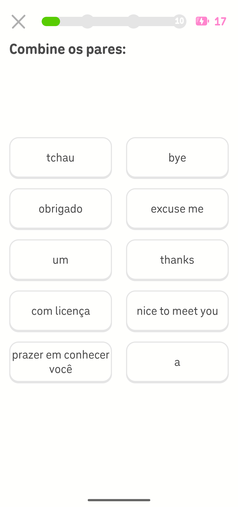
完整英语-葡语双语配对题 查看原图 · 来源页面 E02 · 英语语境词义—英文定义选择 以下是其他母语学习英语的参考，不证明中文课程可用性，也不计入中文完整题图数量。
来源 1
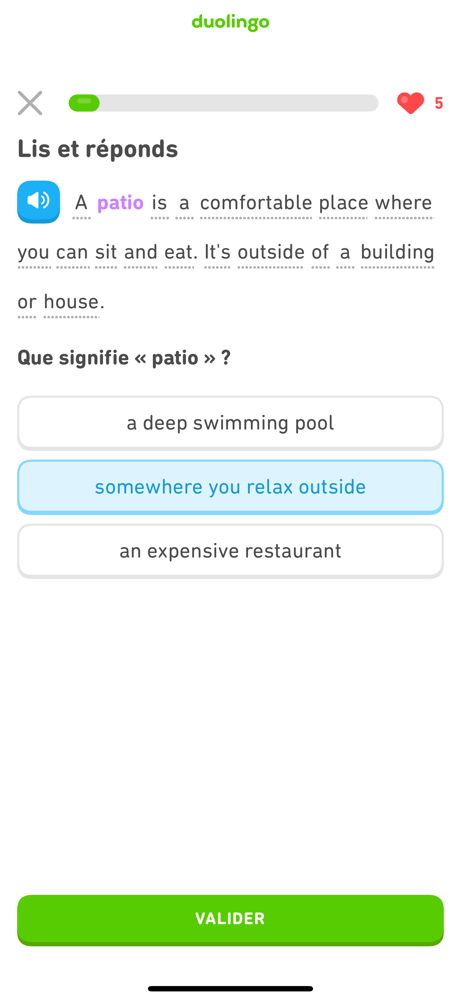
英文段落中的新词对应三个英文释义；题目元指令法语。 查看原图 · 来源页面 E03 · Flashcards：主动说出英语词 以下是其他母语学习英语的参考，不证明中文课程可用性，也不计入中文完整题图数量。
来源 1
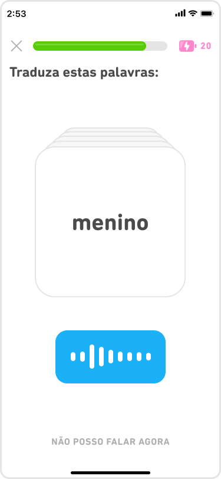
葡语→英语口述词汇卡 查看原图 · 来源页面 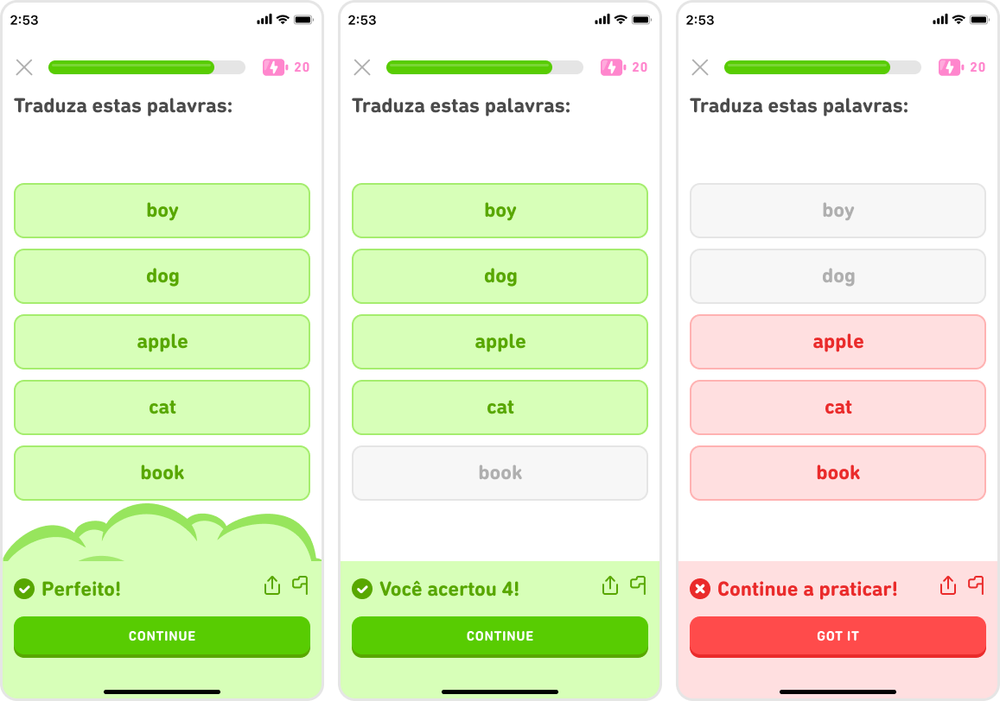
英语词汇卡总结的三个结果状态 查看原图 · 来源页面 E04 · 词块翻译：理解英语并译成母语 以下是其他母语学习英语的参考，不证明中文课程可用性，也不计入中文完整题图数量。
来源 1
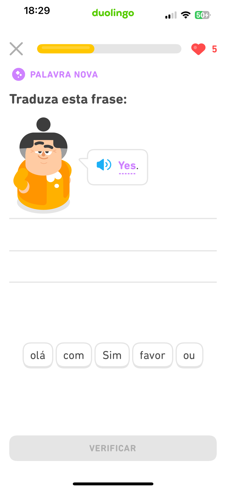
完整题目视口 查看原图 · 来源页面 E05 · 词块翻译：把母语组织成英语 以下是其他母语学习英语的参考，不证明中文课程可用性，也不计入中文完整题图数量。
来源 1
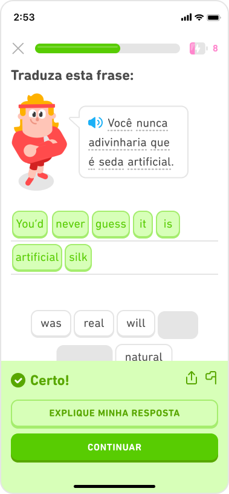
葡语→英语词块翻译：答对后的完整反馈 查看原图 · 来源页面 E06 · 整句自由翻译 以下是其他母语学习英语的参考，不证明中文课程可用性，也不计入中文完整题图数量。
来源 1
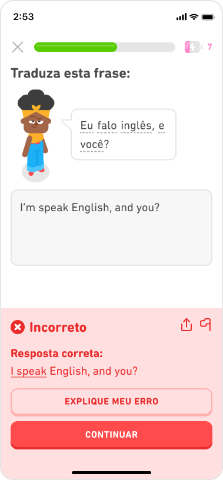
英语自由翻译：错误答案与修正同时保留 查看原图 · 来源页面 E07 · 补全部分翻译 以下是其他母语学习英语的参考，不证明中文课程可用性，也不计入中文完整题图数量。
E08 · 英语翻译的语音输入变体 以下是其他母语学习英语的参考，不证明中文课程可用性，也不计入中文完整题图数量。
来源 1
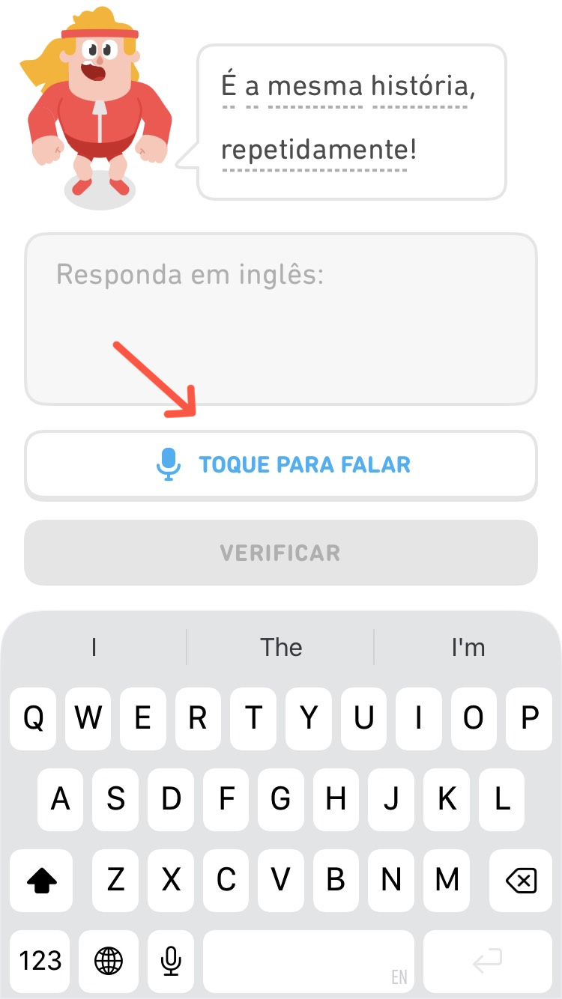
触摸说话与键盘替代输入 查看原图 · 来源页面 E09 · 英语语境选词填空 以下是其他母语学习英语的参考，不证明中文课程可用性，也不计入中文完整题图数量。
来源 1
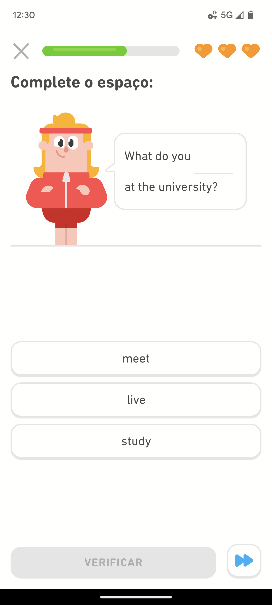
英语问句的一个空与三个英文词选项。 查看原图 · 来源页面 E10 · 英语图境辅助选词填空 以下是其他母语学习英语的参考，不证明中文课程可用性，也不计入中文完整题图数量。
来源 1 · 来源 2
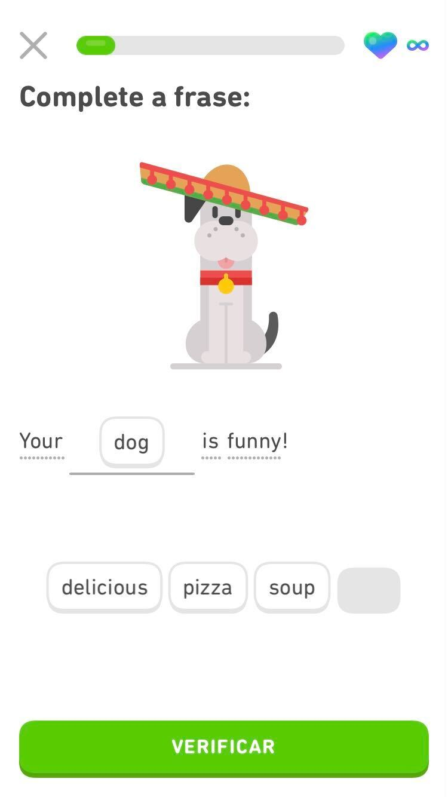
图境辅助英语填空：基础词汇例 查看原图 · 来源页面 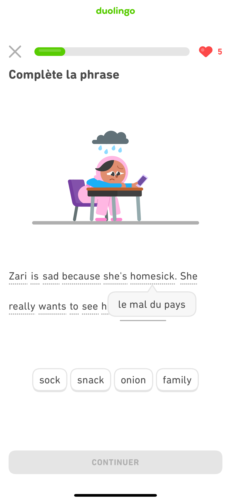
图片+英语语境+一个空+四个英语词块；法语词义提示已展开。 查看原图 · 来源页面 E11 · 英语段落阅读理解选择 以下是其他母语学习英语的参考，不证明中文课程可用性，也不计入中文完整题图数量。
来源 1
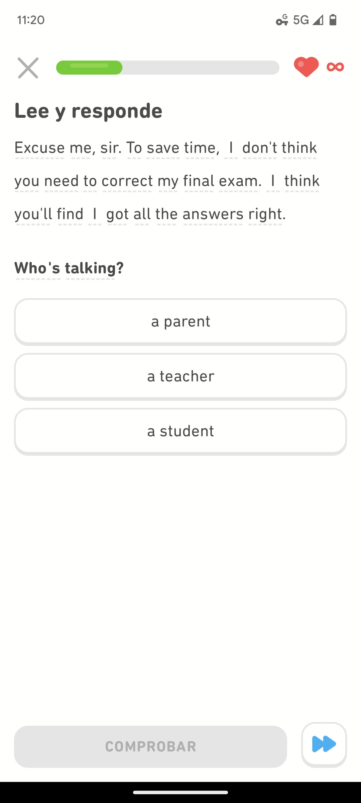
英语短段落、英文理解问题与三个英文选项。 查看原图 · 来源页面 E12 · 英语对话下一句选择 以下是其他母语学习英语的参考，不证明中文课程可用性，也不计入中文完整题图数量。
来源 1 · 来源 2
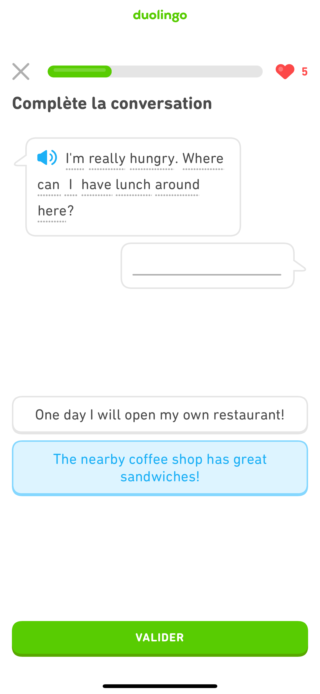
根据英语对话开场，从两个英语候选句选回应。 查看原图 · 来源页面 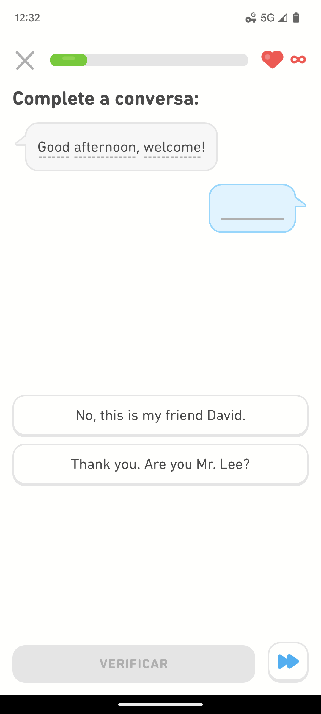
英语对话开场与两个英语回应选项。 查看原图 · 来源页面 E13 · 词块听写/听后重组 以下是其他母语学习英语的参考，不证明中文课程可用性，也不计入中文完整题图数量。
来源 1
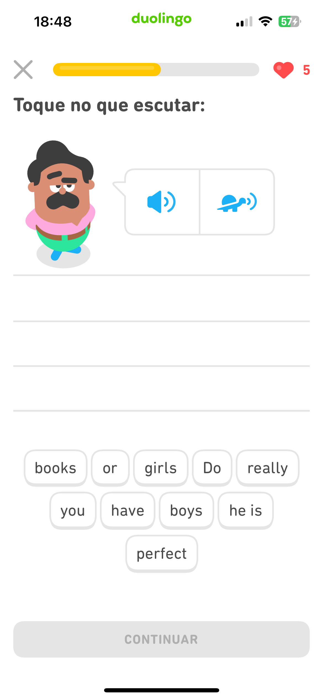
完整题目视口 查看原图 · 来源页面 E14 · 听后理解并选答 以下是其他母语学习英语的参考，不证明中文课程可用性，也不计入中文完整题图数量。
来源 1
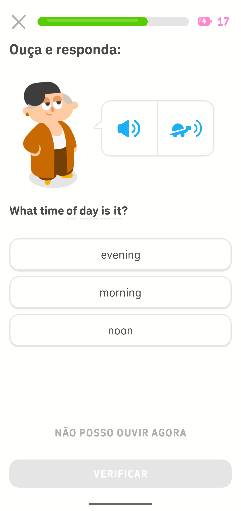
完整英语听后选答 What time of day is it? 三选一、慢速、无法听音、检查、Home可见。 查看原图 · 来源页面 E15 · 英语整句跟读与朗读 以下是其他母语学习英语的参考，不证明中文课程可用性，也不计入中文完整题图数量。
来源 1 · 来源 2
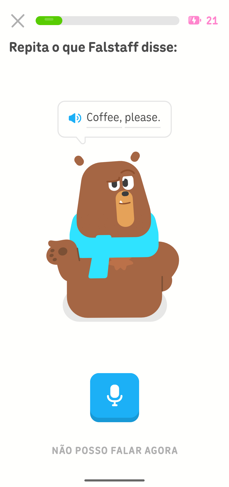
完整普通课英语跟读Coffee, please. 查看原图 · 来源页面 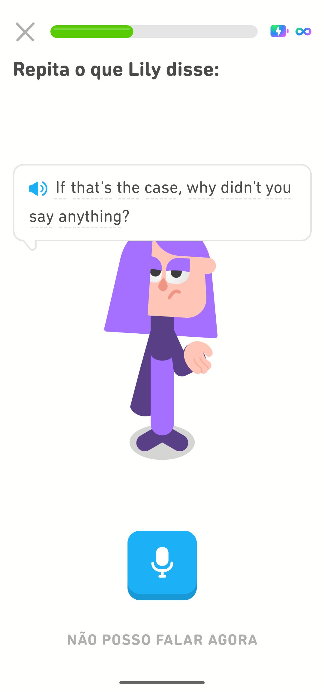
完整英语跟读句子 查看原图 · 来源页面 E16 · 理解英语问题并说出正确回应 以下是其他母语学习英语的参考，不证明中文课程可用性，也不计入中文完整题图数量。
来源 1
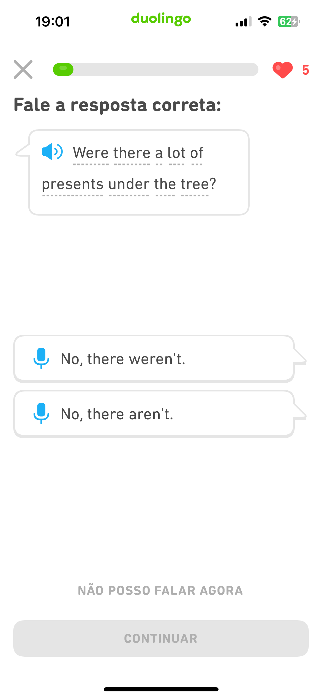
完整英语口说选答视口；顶部退出、进度与爱心 查看原图 · 来源页面 E17 · 英语近音词听辨二选一 以下是其他母语学习英语的参考，不证明中文课程可用性，也不计入中文完整题图数量。
来源 1
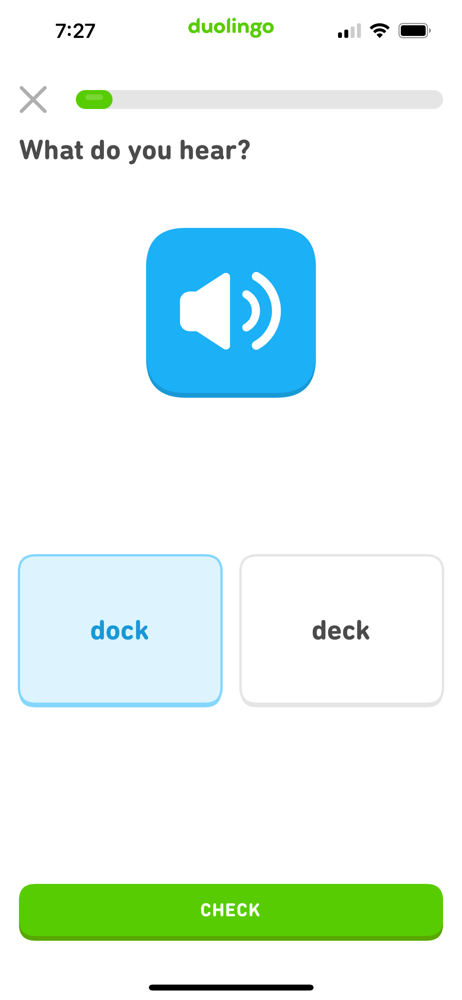
听一个单词，从两个近音英文词中选一个。 查看原图 · 来源页面 E18 · 英语两段声音同异判断 以下是其他母语学习英语的参考，不证明中文课程可用性，也不计入中文完整题图数量。
来源 1
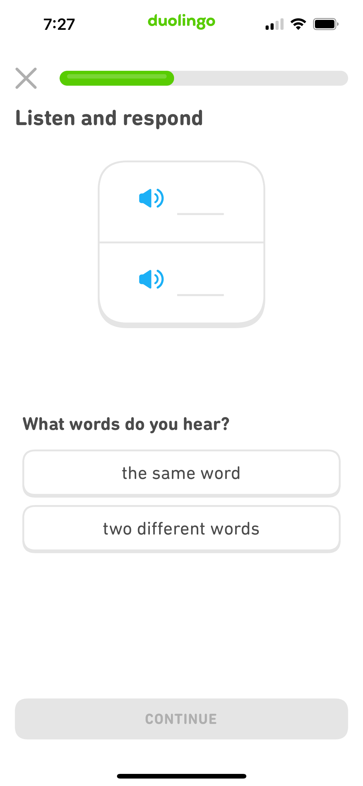
播放两段声音，判断同词还是不同词。 查看原图 · 来源页面 E19 · 英语声音—书面词语配对 以下是其他母语学习英语的参考，不证明中文课程可用性，也不计入中文完整题图数量。
来源 1
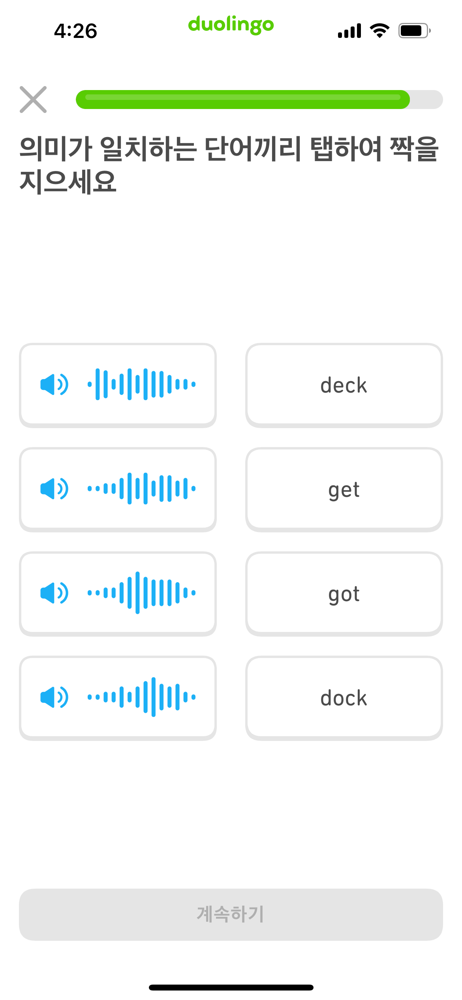
韩语界面、英语音频词汇配对 查看原图 · 来源页面 S01 · 故事内容理解单选 以下是其他母语学习英语的参考，不证明中文课程可用性，也不计入中文完整题图数量。
来源 1 · 来源 2
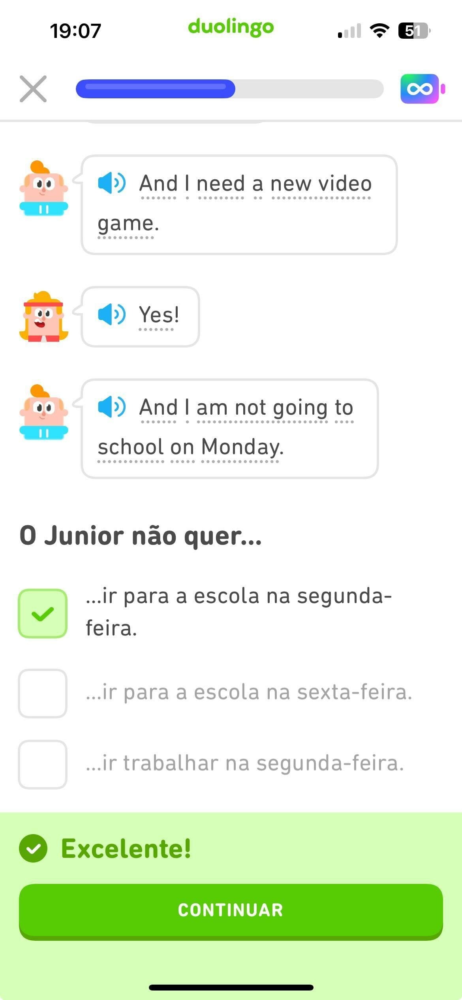
英语Junior/Eddy对话；葡语内容理解单选，选中正确项。 查看原图 · 来源页面 S02 · 故事里按释义找到英语词或词组 以下是其他母语学习英语的参考，不证明中文课程可用性，也不计入中文完整题图数量。
来源 1 · 来源 2
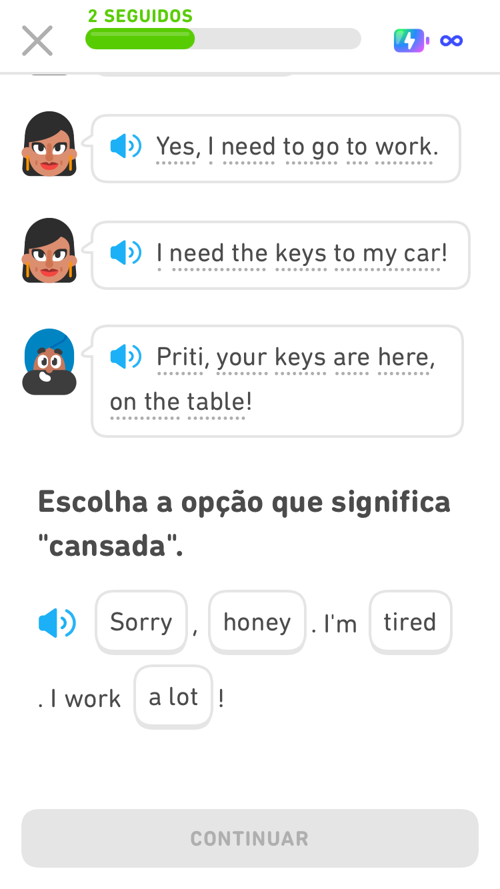
在英文句子里点击对应葡语cansada的词块tired。 查看原图 · 来源页面 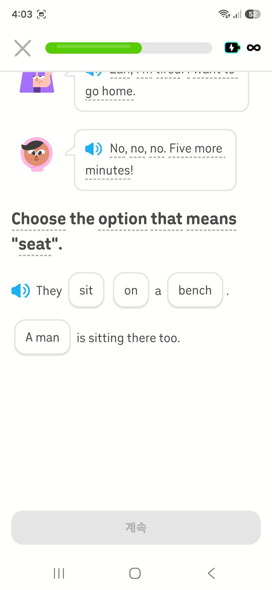
英语任务Choose the option that means seat；句中选bench。 查看原图 · 来源页面 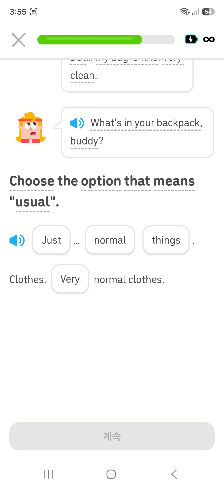
英语任务以usual解释normal；在句中定位同义词。 查看原图 · 来源页面 S03 · 故事末尾开放写作 以下是其他母语学习英语的参考，不证明中文课程可用性，也不计入中文完整题图数量。
来源 1 · 来源 2
R01 · Radio 听音选指定数量的词 以下是其他母语学习英语的参考，不证明中文课程可用性，也不计入中文完整题图数量。
来源 1
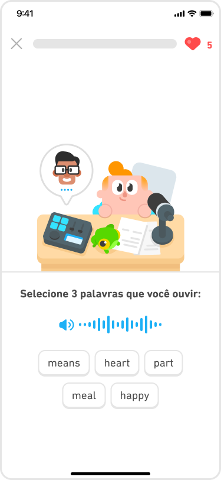
Junior电台；同类听音选3词，尚未选答。 查看原图 · 来源页面 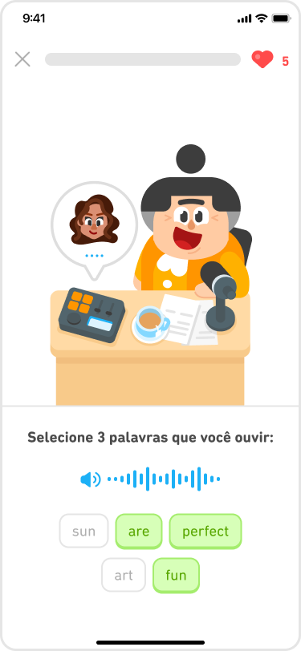
Lucy电台；从5个英语词选听到的3个，当前3词绿色。 查看原图 · 来源页面 R02 · Radio 音频与母语释义配对 以下是其他母语学习英语的参考，不证明中文课程可用性，也不计入中文完整题图数量。
来源 1
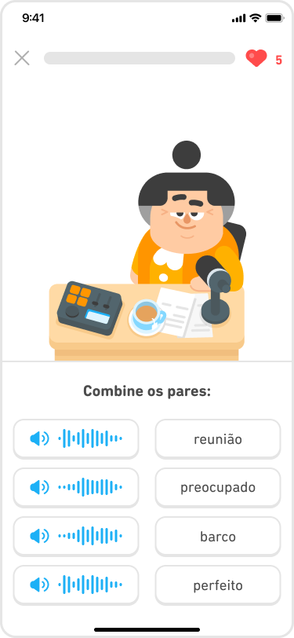
Lucy电台；4个音频按钮和4个葡语释义配对。 查看原图 · 来源页面 R03 · Radio 判断理解正误 以下是其他母语学习英语的参考，不证明中文课程可用性，也不计入中文完整题图数量。
来源 1
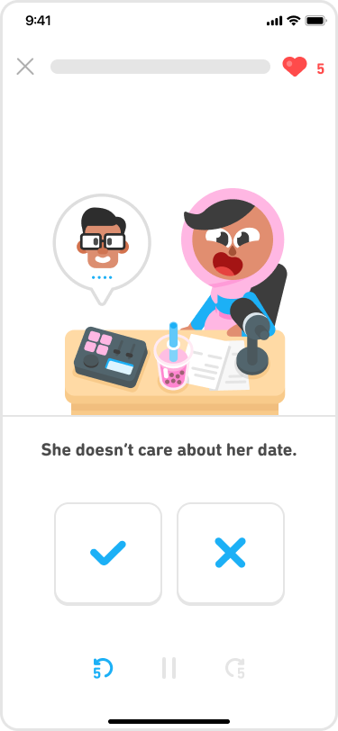
Zari电台，英语陈述下方✓/×判断。 查看原图 · 来源页面 R04 · Radio 听音选择图片 以下是其他母语学习英语的参考，不证明中文课程可用性，也不计入中文完整题图数量。
来源 1
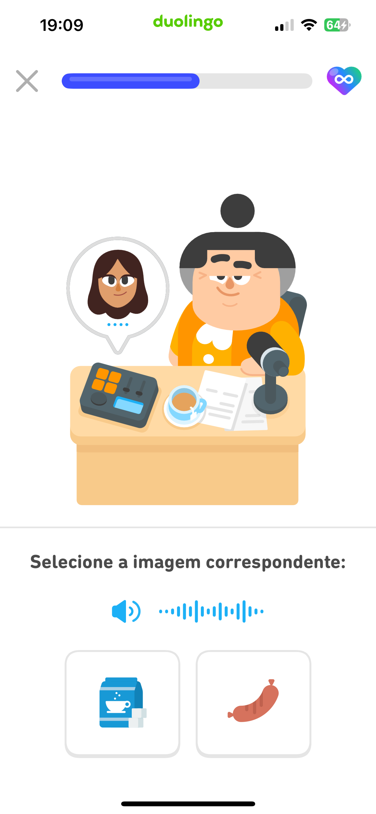
完整英语课程Radio听音选图 查看原图 · 来源页面 A01 · Adventures 场景探索/点物/读标牌 以下是其他母语学习英语的参考，不证明中文课程可用性，也不计入中文完整题图数量。
来源 1
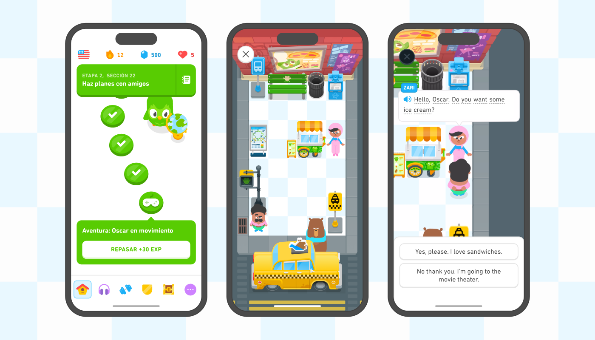
左：美国旗英语路径；中：Óscar城市场景；右：Zari英语提问与两个英语回应。 查看原图 · 来源页面 A02 · Adventures 英语回应选择 以下是其他母语学习英语的参考，不证明中文课程可用性，也不计入中文完整题图数量。
来源 1
左：美国旗英语路径；中：Óscar城市场景；右：Zari英语提问与两个英语回应。 查看原图 · 来源页面 M01 · Roleplay / Bate-Papo 英语多轮情境聊天 以下是其他母语学习英语的参考，不证明中文课程可用性，也不计入中文完整题图数量。
来源 1 · 来源 2 · 来源 3
M02 · Video Call with Lily 英语自由对话 以下是其他母语学习英语的参考，不证明中文课程可用性，也不计入中文完整题图数量。
来源 1 · 来源 2 · 来源 3 · 来源 4 · 来源 5
英语课程入口→呼叫Lily→中性Lily通话画面。 查看原图 · 来源页面 完整Lily视频通话页面含场景、挂断、Home；画面语言中性 查看原图 · 来源页面 M03 · Video Call with Falstaff 英语引导对话 以下是其他母语学习英语的参考，不证明中文课程可用性，也不计入中文完整题图数量。
来源 1
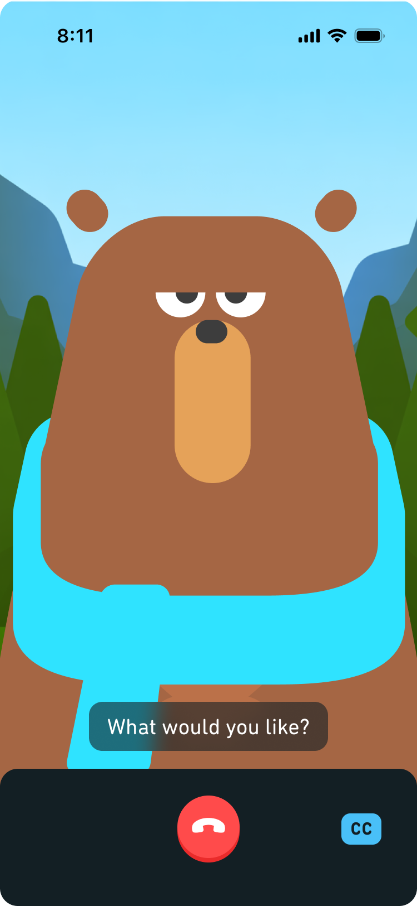
Falstaff正面对话，英文字幕What would you like?。 查看原图 · 来源页面 P01 · 英语练习目录、词汇表与错题集 以下是其他母语学习英语的参考，不证明中文课程可用性，也不计入中文完整题图数量。
来源 1 · 来源 2
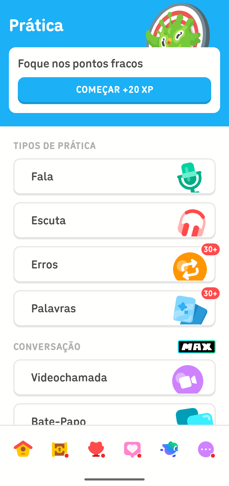
完整葡语练习目录视口 查看原图 · 来源页面 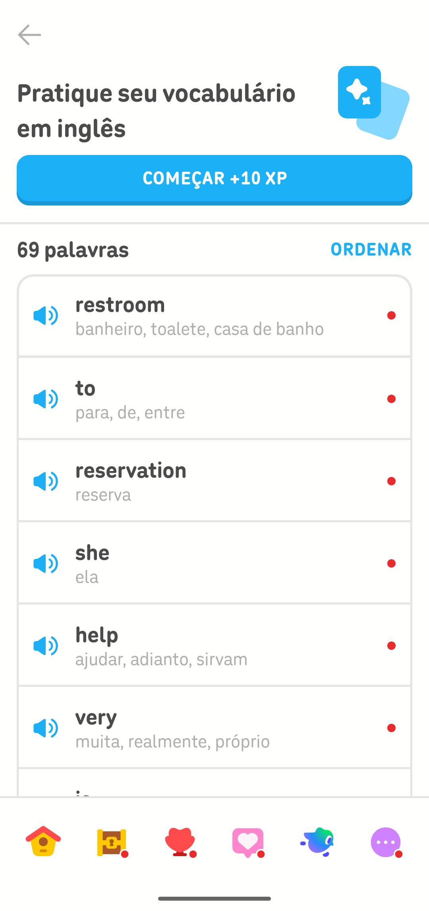
完整英语词汇列表入口及音频词典 查看原图 · 来源页面 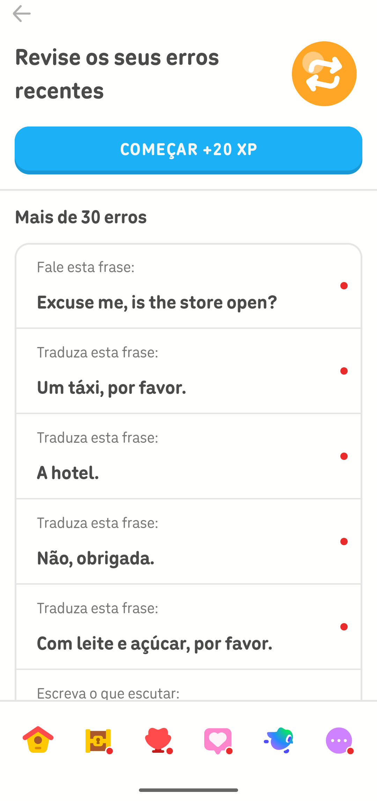
完整英语错题入口及列表视口 查看原图 · 来源页面 P02 · Sounds：英语音素目录 以下是其他母语学习英语的参考，不证明中文课程可用性，也不计入中文完整题图数量。
来源 1
P03 · Stories：逐句读听与推进 以下是其他母语学习英语的参考，不证明中文课程可用性，也不计入中文完整题图数量。
来源 1 · 来源 2
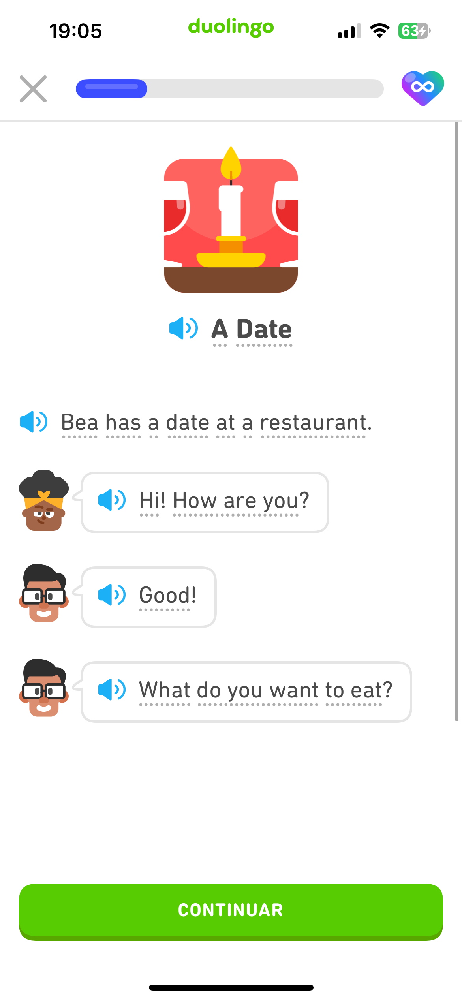
完整英语Stories朗读推进页A Date 查看原图 · 来源页面 P04 · 正确、错误与英语答案解释 以下是其他母语学习英语的参考，不证明中文课程可用性，也不计入中文完整题图数量。
来源 1
完整官方手机界面含状态栏、退出/返回、全部该状态主要控件和底部Home；葡语UI学习英语。 查看原图 · 来源页面 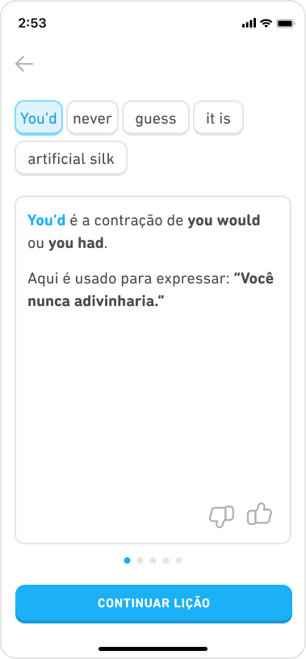
完整官方手机界面含状态栏、退出/返回、全部该状态主要控件和底部Home；葡语UI学习英语。 查看原图 · 来源页面 完整官方手机界面含状态栏、退出/返回、全部该状态主要控件和底部Home；葡语UI学习英语。 查看原图 · 来源页面 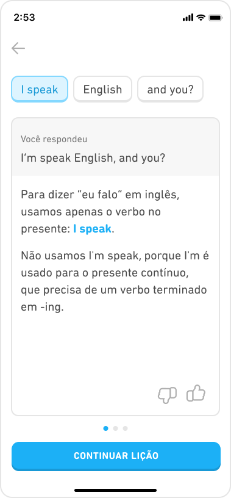
完整官方手机界面含状态栏、退出/返回、全部该状态主要控件和底部Home；葡语UI学习英语。 查看原图 · 来源页面 P05 · 英语路径与课程编排 以下是其他母语学习英语的参考，不证明中文课程可用性，也不计入中文完整题图数量。
来源 1
返回主报告